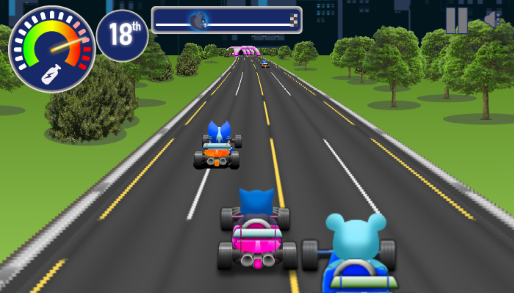
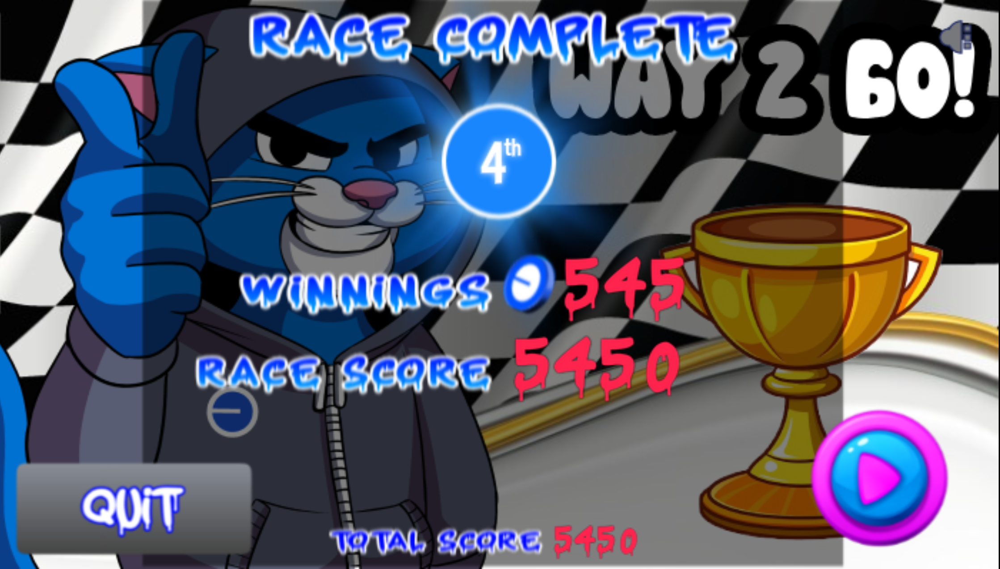
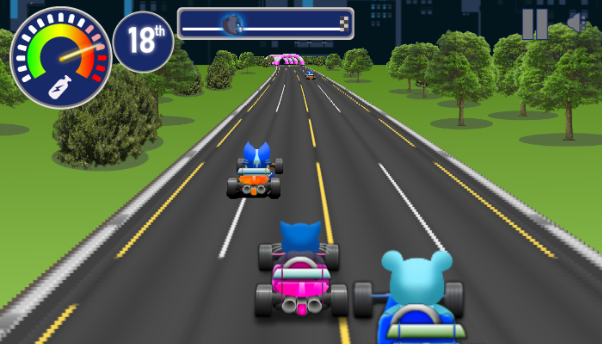
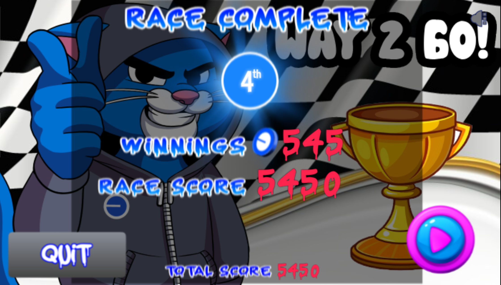
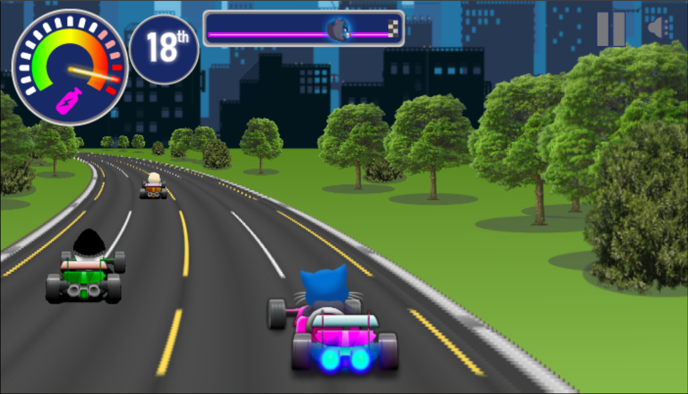
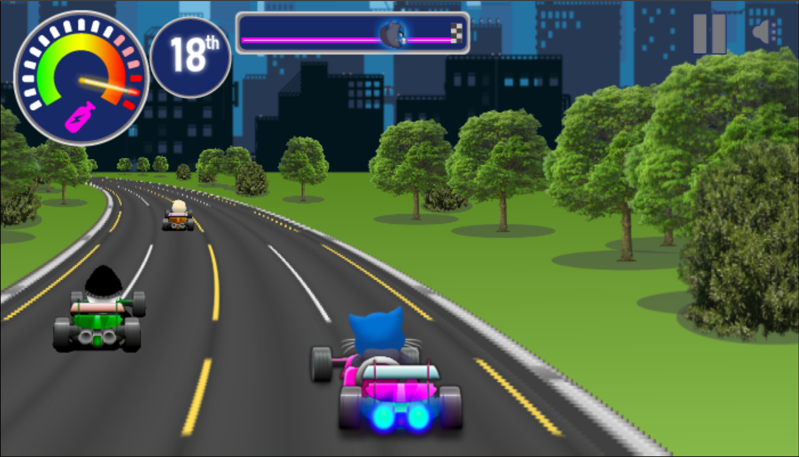
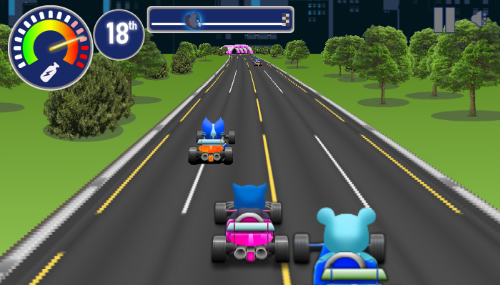
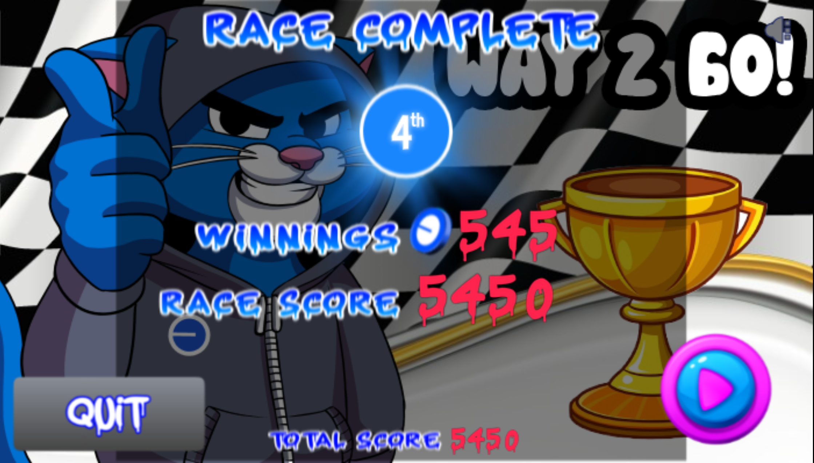
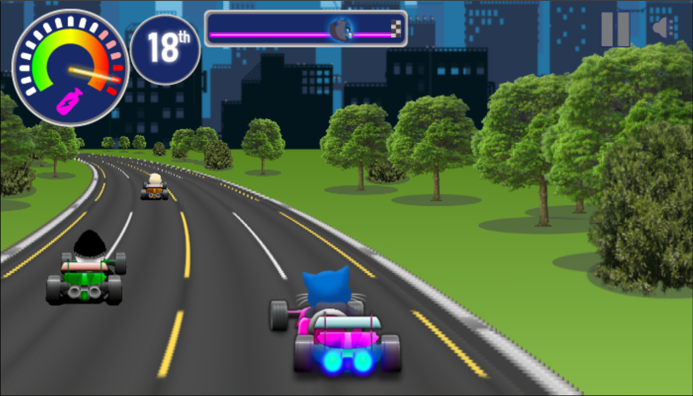

Screenshots
 



 

Unity | Mobile | Game Development
This is a web kart racing game where player race other 19 karts. The player drives with arrows collects boosts, avoids hitting other karts, and races in hopes to be 1st. The game increases difficulty over time and features fake multiplayer. After every race player can buy upgrades.



Working on this project helped me improve my skills in balancing gameplay difficulty, optimizing performance for web devices, and designing minimal but effective game UIs.